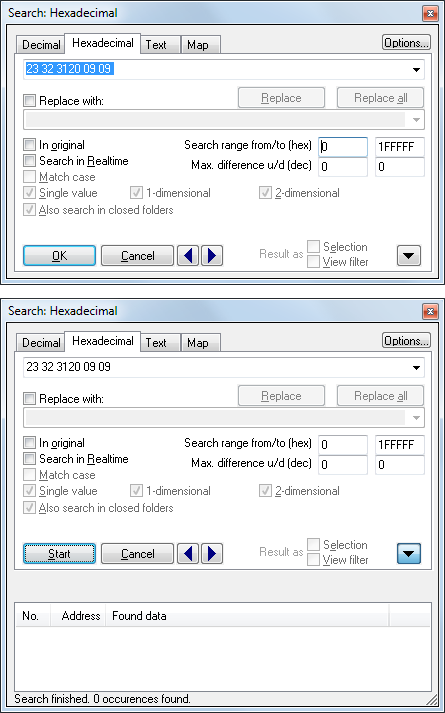

|
The dialog Search for byte sequences (Menu Find) |

  
|
|
The dialog Search for byte sequences (Menu Find) |
|

Use this dialog to search for (and optionally replace) byte sequences / texts in the project data or for texts in the map list.
You can select something in the WinOLS editor, copy it and paste it in this dialog.
Use the blue left/right arrow buttons to jump to the next or previous occurrence of the search text. Use the black down arrow to get a list of all occurrences (max. 200000). Click on ‘Start‘ to initiate a search and fill the list with data. If the list is open and you start a new search by clicking on one of the blue arrow buttons, only addresses before or after the current cursor position will be searched. Hold the shift key while clicking the blue arrow buttons to force WinOLS to use this feature even though you didn't change the search.
Limiting results:
You may enter the search range. Only occurrences within this range will be shown as results. Use the maximal difference to configure how far each cell may differ from your search string in order to be considered as occurrence. You may configure the difference to up and down separately. Use the options button for more options to limit the results.
Format + wildcards + alternative values + greater/smaller:
| · | When searching for byte sequences use spaces to separate the different bytes. The choice of searching for decimal or hexadecimal may be overridden for single bytes by prefixing them with ‘0x’ for hexadecimal interpretation. |
| · | Wildcards: You can use a question mark as a symbol for an unknown value. For example with ‘longw?rd’ or ‘ff ff aa ?? ab’ you can search for these text / byte sequence. The ‘?’ / ‘??’ will match any byte. When searching in hexadecimal mode you can also use the question mark for an unknown half-byte (nibble), for example: ff ?f. In decimal mode, you can use the question for an unknown cipher, for example 123, 4?6. )(Please note that using the question mark in decimal mode will slow down the search significantly.) |
| · | Alternative values: If you want more than one value to match in one place, you can separate them by slashes (but without spaces). Example: 'ff 11/22 ff' finds both 'ff 11 ff' and 'ff 22 ff'. |
| · | Greater/Smaller: You can specify that a value should be greater/smaller than a certain number. Example: "77 >110". If you use both operators without spaces, then they refer to the same cell, effectively specifying a range. Example: "77 >110<120" |
Checkboxes:
| · | Search in realtime: The search will start while you’re typing. |
| · | In original: The search text will be searched in the original version instead of the version you’re currently editing. |
| · | Match case: When searching for texts, the case of the letters will be observed. |
| · | Single value / 1-dimensional / 2-dimensional: Only maps with the specified dimensions will be searched. (Only for map search mode) |
| · | Strictly monotonic values: Only sequences are found where each value is greater than the previous one (or each value is less than the previous one). This is useful to search for axes and usually needs to be combined with wildcards or tolerance. |
A click on the button 'Options' shows more options:
| · | Address: Only data starting at the address of the right offset will be searched. If 'Automatic' is used WinOLS automatically uses the bit width of the current window. |
| · | Programm code: Only within / outside of program code is searched. You can recognize program code by the 'faded' values in the hexdump. (See also overview.) |
| · | Search in... : Only within / outside maps will be searched. |
| · | For maps... : When searching in (or: for) maps, only modified / unmodified / open maps will be searched. Important: WinOLS continues to search in the current window (e.g. Hexdump) and uses its data organization. Not that of the map. |
| · | Values end on: When searching for data only values will match that end (in decimal mode) on the chosen numbers. This options is useful when using wildcards. |
Templates:
Click on ">" next to the search line to display previous searches or to select a template file whose content is to be displayed here in the list. This is a simple text file. Each line is one entry. Each line can contain a comment in the format "Search value // Comment". The search dialog then displays the comment in the drop-down list, but uses the search value for the search.
Example:
11 22 33
22 33 44 // You will see this text in the drop-down **)
// Treebranch
33 44 // -sub item 1
55 66 // -sub item 2
// Another Treebranch
// -Subbranch
// --Subsubbranch
33 44 //sub item 1 *)
55 66 //sub item 2
*) Note: For simplicity, you can skip the minus characters for lines that contain search text. WinOLS will assume that it's a child of the most recent branch.
**) Note: You MUST use a space character before the comment: "x // good" (not: "x// bad"). This is necessary because "//" can occur in some ECU strings for text search mode.
Triggers in templates:
You can link the current selection of search/replace with triggers. If a comment in a template contains the text "->XY", the trigger "XY" is triggered. This selects an item containing "<-XY" in the comment in the other field.
Example:
Search-Template.txt:
AA BB // Click here ->MyTriggerName
Replace-Template.txt:
CC DD // This will be selected automatically <-MyTriggerName
Simple replace:
Simply enter the new values in the replace line. Use a question mark for values that should not be changed.
Example:
Search: 1 2 3 ? 5
Replace: ? 0 0 ? ?
The search text matches for example "1 2 3 99 5" and only changes the second and third values. Result: "1 0 0 99 5".
Extended replace:
This function requires WinOLS 5.58 + FeatureUpdate |
If the replace text begins with "do ", commands can be entered there. The window and/or a part of the coordinate can be adjusted.
Examples:
do *2; +1 |
2 combined commands: The cells are doubled and 1 is added. |
do yaxis=1 |
The value in the Y-axis is set to 1 |
do map0.col1=4 |
The value in the connected map 0 (counted from the left) in column 1 is set to 4. |
do myid.yaxis=4 |
The value in the connected map with the Id myid in the Y-axis is set to 4 |
do map[xy].col[zz]=4 |
The value in the connected map field with xy in the name in the column with zz in the text name is set to 4 |
do col[1]=4 |
The value in the map field in column #1 (where #0 is the first column) is set to 4 |
do col[+1]=4 |
The value in map field 1 to the right of the search value is set to 4 |
do col[+0]=4 |
The value in the map at the exact location of the search value is set to 4 |
do map0.col1=4; map0.col2=5 |
2 instructions |
Attention:
| · | All indexes start at 0! |
| · | If an index begins with a + or - (e.g. col[+2]), then it is relative to the reference (only possible with square brackets) |
Context menu:
You can right-click a selection in the list to directly modify the found cells.
Create from the list:
You can right-click a selection in the list to create markers, comments or maps. For maps you can use the following placeholders:
%Num% |
Number of the result |
%Num2% |
Number of the result in the list |
%Results% |
Found values |
%Search% |
Searched value |
%Address% |
Address of the result |
%Size% |
Size of the map at the position |
%Id% |
Id of the map at the position |
%Details% |
Details column |
%Result3% |
From the found values the 3rd |
%Result3.dec% |
From the found values the 3rd as decimal value |
%Result3.hex% |
From the found values the 3rd as hexadecimal value |
Note:
This dialog is a "floating" dialog. All floating dialogs can be toggled with the tab key.
Note:
The hotkey Ctrl+F will start this dialog only if a project window has the focus. If the map list has the focus (= the cursor is blinking there), a search dialog for the map list will be started.
Shortcuts
| Symbol bar: |
| Keyboard: | Ctrl+F |